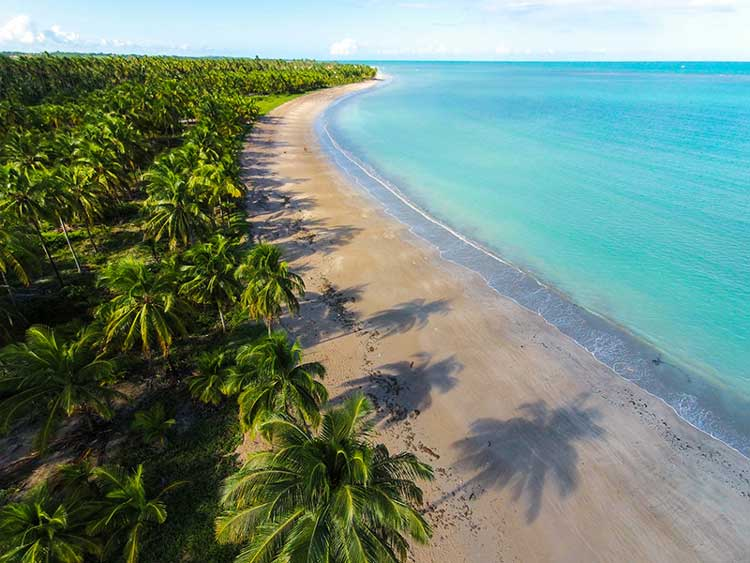
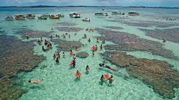

| Maceio |
Imagine acordar e ver o sol nascer sobre um mar que vai do verde-esmeralda ao azul mais cristalino que você já viu. Essa é a rotina de quem está em Maceió, a deslumbrante capital de Alagoas. Um lugar onde a natureza caprichou nos detalhes e a vida parece ter um ritmo mais leve, mais feliz.
Com um dos litorais urbanos mais bonitos do Brasil, Maceió é um convite para caminhar à beira-mar, sentir a brisa no rosto e se apaixonar a cada curva da orla. As praias de Pajuçara, Ponta Verde e Jatiúca são verdadeiros cartões-postais — com suas águas calmas, coqueiros balançando ao vento e jangadas coloridas que levam até piscinas naturais no meio do oceano.
Mas Maceió é muito mais do que paisagens deslumbrantes. É cultura viva em cada esquina, com festas populares, rendeiras trabalhando com delicadeza no filé alagoano e uma culinária de dar água na boca — onde o sururu, a tapioca e a peixada são protagonistas à mesa.
A cidade também é um ponto de partida perfeito para explorar as maravilhas do estado: ao norte, Maragogi; ao sul, a Praia do Francês e o Gunga. Tudo pertinho, com acesso fácil, ideal para quem quer viver o melhor do Nordeste em poucos dias.
Maceió é charme, é sabor, é calor humano. Um destino que conquista o coração de quem chega — e deixa saudade em quem parte. |
 |
| Maragogi |
Se você sonha com águas cristalinas, areias claras e um mar que parece ter sido pintado à mão, então está sonhando com Maragogi — um dos destinos mais deslumbrantes do litoral brasileiro. Localizado no norte de Alagoas, a cerca de duas horas de Maceió, Maragogi é conhecido como o Caribe Brasileiro — e não é por acaso.
O grande destaque são as galés, as famosas piscinas naturais que se formam em meio aos recifes de corais, acessíveis em passeios de catamarã durante a maré baixa. Mergulhar ali é como entrar em um aquário gigante: peixes coloridos, águas mornas e uma paz que só o mar pode oferecer.
Mas Maragogi vai muito além das galés. Suas praias são longas, tranquilas e rodeadas por coqueiros, como as belíssimas Praia de Antunes, Xaréu, Barra Grande e Peroba — perfeitas para quem quer relaxar, fazer fotos incríveis ou simplesmente esquecer do mundo por um tempo.
A vila tem aquele charme típico de cidade litorânea, com gente simples e acolhedora, ótimos restaurantes à beira-mar e opções de hospedagem para todos os estilos. E a culinária? É uma celebração de sabores do mar: lagosta, camarão, polvo, tudo fresco, com tempero nordestino e servido com aquele sorriso que só quem vive perto do mar sabe dar.
Maragogi é paraíso em estado puro — um lugar que encanta, renova e faz a gente querer voltar antes mesmo de ir embora |
 |
| Marechal Deodoro |
Berço de um dos maiores nomes da história do Brasil — o Marechal Deodoro da Fonseca, primeiro presidente da República — essa charmosa cidade alagoana vai muito além dos livros. Marechal Deodoro é um verdadeiro encontro entre o passado e a natureza exuberante, onde casarões coloniais, igrejas centenárias e ruas de pedra convivem em perfeita harmonia com algumas das praias mais bonitas do estado.
O centro histórico é um convite à viagem no tempo. Tombado pelo IPHAN, guarda relíquias da arquitetura barroca, como a imponente Igreja de Santa Maria Madalena e antigos conventos que parecem sussurrar histórias ao vento. Passear por ali é se deixar levar por um clima de nostalgia e encantamento.
Mas é ao sair do centro que Marechal revela seu lado paradisíaco. As praias são de uma beleza surpreendente — com águas mornas, calmas e cristalinas. A Praia do Francês, uma das mais famosas de Alagoas, é um paraíso para quem busca diversão, boa estrutura e um mar perfeito para o banho. De um lado, ondas para os surfistas; do outro, piscinas naturais formadas pelos recifes.
Mais tranquila e ainda pouco explorada, a Praia do Saco é um refúgio para quem quer relaxar em paz, longe do agito. Já a Praia de Barra Nova, com seu encontro mágico entre o mar e a lagoa, é ideal para famílias e apaixonados por esportes náuticos.
Marechal Deodoro é um destino completo: história, cultura, fé e mar em perfeita sintonia. Um lugar onde cada passo tem uma memória e cada mergulho, um novo motivo para se apaixonar. |
 |